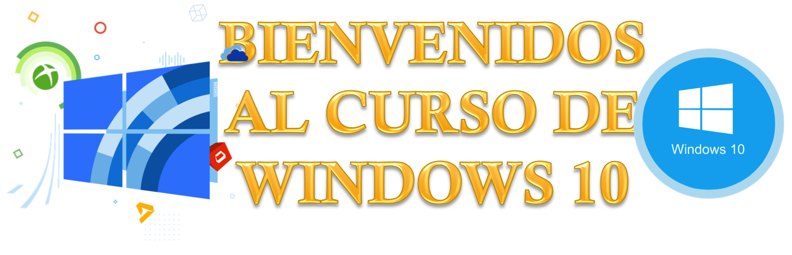

Detalles

ANTES DE INICIAR
1. Haz clic aquí e introduce tus datos
3. Desarrolla estas preguntas y envíalas a informaticancif@gmail.com
DESCRIPCIÓN DEL CURSO
Este curso, está enfocado a la enseñanza de las características, utilidades y funcionalidades que nos ofrece el sistema operativo Windows 10.
El mismo está dirigido a estudiantes de primer ingreso a la universidad.
OBJETIVO GENERAL
- Analizar el uso de las principales funcionalidades del sistema operativo Windows 10.
OBJETIVOS ESPECÍFICOS
- Examinar las mejoras que aporta respecto a las anteriores versiones del sistema operativo Windows.
- Descubrir las funciones más importantes de Windows 10
CONTENIDO
Unidad 1. Novedades en Windows 10
1.1. Introducción
1.2. Novedades de Windows 10
1.3. Versiones de Windows 10
1.4. Problemas de compatibilidad
1.4.1. Diferencias entre versiones de Windows 10
1.5. Actualización a Windows 10
1.6. Desinstalar Windows 10
Unidad 2. El sistema operativo Windows 10
2.1. El Sistema Operativo
2.2. Dispositivos básicos: El ratón, el teclado y el teclado en pantalla
2.2.1. El teclado y el ratón
2.3. Las ventanas
2.3.1. Tipos de ventanas
2.3.2. Cerrar ventanas
2.3.2. Organizar ventanas
Unidad 3. La interfaz de Windows 10
3.1. El Escritorio de Windows 10
3.2. El Menú Inicio
3.3. La caja de búsqueda de la barra de tareas
3.4. La barra de tareas
3.5. La Vista de tareas y los escritorios virtuales
3.6. Iconos del Sistema
3.7. La fecha y hora del ordenador
3.8. El Centro de actividades
3.9. Introducción a la Configuración
3.10. Creación y organización de iconos en el escritorio
3.10.1. Propiedades del menú Inicio
3.10.2. Características y elementos de un menú
OBSERVACIONES
- Para realizar cualquier consulta escribir al correo informaticancif@gmail.com o en el foro de consultas asignado.
- Se habilitará un nuevo foro cada semana.